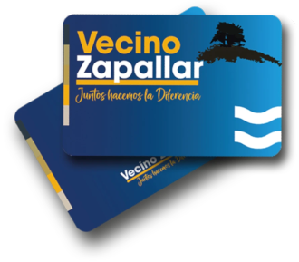

¡Obtén tu tarjeta y utiliza los beneficios!
¡Descubre todos los beneficios que tenemos para ofrecerte!
¿CÓMO OBTENERLA?
Para obtener tu tarjeta vas a necesitar los siguientes documentos que acrediten que eres residente de la comuna de Zapallar;
- Escritura Propiedad
- Registro Social de Hogares
- Boleta de algún servicio básico a nombre del solicitante (Luz y Agua) correspondiente a alguno de los últimos 3 meses anteriores a la solicitud de tarjeta.
- Copia de contrato vigente de arriendo a nombre del titular, con declaración jurada de vigencia dentro del último año calendario.
- Estar inscrito en algún Centro de Salud Familiar de la Comuna (CESFAM)
- Tener domicilio electoral en la comuna
- Ser estudiante de algún colegio de la comuna
Si vas a agregar algún integrante a tu grupo familiar, para acreditar el parentesco vas a necesitar ALGUNO de los siguientes documentos:
- Certificado de Nacimiento o Libreta de familia. (Sólo para hijos menores de 18 años).
- Registro social de hogares
- Boleta de servicio a nombre del nuevo integrante con domicilio titular (Luz y Agua)
Lugares de atención:
Zapallar: Januario Ovalle 147
Catapilco: José María Mercado 478
La Laguna: Av. Carlos León Briceño 303

¡QUIERO OBTENERLA!